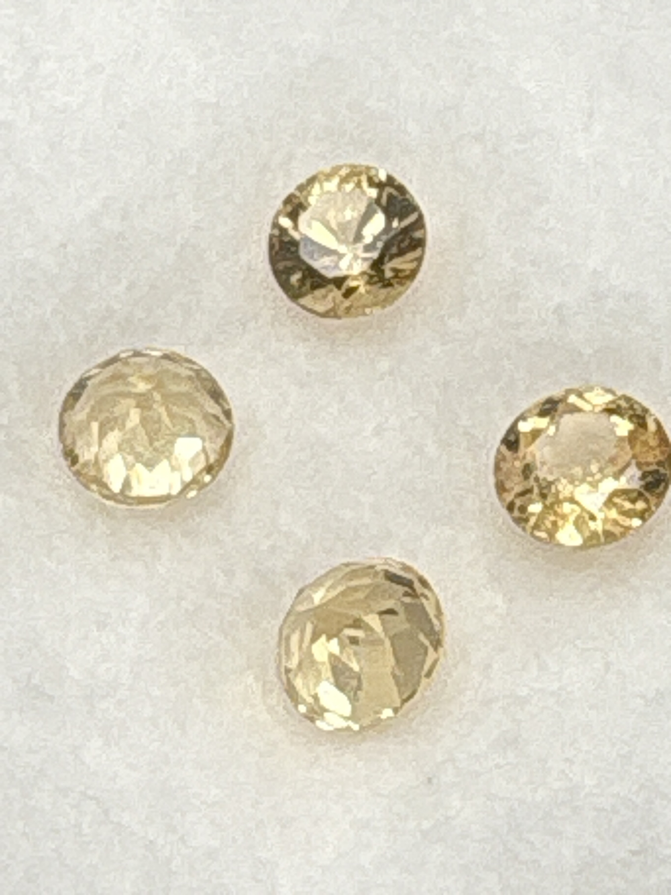

The Gem Drawer › No. 43

Four golden-champagne garnet rounds labeled “Tsavo Golden” — golden, not green.
| Catalogue no. | #43 |
|---|---|
| As labeled | Golden Grossular Garnet (labeled "Tsavo Golden" - golden/yellow color, NOT green tsavorite, see notes; PARCEL OF 4 STONES) |
| Shape / cut | Round (all four) |
| Weight | 0.5 ct |
| Measurements | 5mm round (each, presumed) |
| Colour | Golden/champagne yellow |
| Clarity / condition | Not recorded |